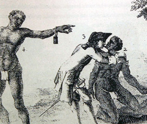

|
In its final form, the Constitution decreed that American involvement in the
international slave trade would end in 1808. For the states of the North this
was largely a moot point, as nearly all had eliminated slavery by 1808, with the
rest following suit shortly thereafter. In the Southern states, however, slavery
remained vital, particularly after the invention of the cotton gin. As such, the
United States remained active in the international slave trade until the 1808
deadline. Thereafter, some smugglers chose to flout the law, keeping the trade
alive--albeit in reduced form--until 1865.
|

In this illustration, an English colonist licks
the sweat off the chin of a slave. This was a test for sickness--many slaves
came to North America with communicable diseases that could wipe out
a plantation owner's workforce.
|
Interestingly, the decision to end America's participation in the
international slave trade was prompted largely by Southern states. In part, this
was because the states of the Upper South envisioned a thriving market in
interstate slave sales, and wished to eliminate competition from foreign slave
brokers. The states of the Lower South might well have protested the lack of
choice and supply that this imposed upon them. This did not happen, however, as
most of the largest and most dedicated slaveholders had sworn off the
international slave trade by 1800, thanks to the Haitian Revolution.
The Haitian Revolution began in 1791 as a revolt in the colony of
Saint-Domingue, the most lucrative and important French possession in the New
World. On the island, slaves joined together and violently rebelled against
their masters. The French government sent reinforcements, but by the time they
arrived the slaves were unified under the leadership of ex-slave Toussaint
Louverture. Battles took place across the island until 1793, when the slaves
defeated the French military at Port au Prince, the island's capital. When slave
owners heard the capital had fallen into the hands of the slave army, they were
terrified, and many fled to ships bound for safer areas. Some headed to America,
where their stories brought terror to the hearts of Southerners.
In 1794, the French Revolutionary government ended slavery in the French
colonies. However, the fall of that government was followed by the rise of
Napoleon Bonaparte, who wanted to reinstate slavery, especially in Saint
Domingue. He desired the wealth that was generated by the sugar/slave colonies.
Napoleon offered to conduct peace talks with the rebel slaves, who were still
officially residents of the French Empire. When Louverture arrived in Paris for
the talks he was promptly arrested and sent to Fort de Joux, where he was
imprisoned for the rest of his life. Napoleon then sent a force of 25,000 men to
Saint-Domingue. Though this detachment temporarily reasserted French authority,
it was ultimately felled by disease and by the slave army. On January 1, 1804,
Jean-Jacques Dessalines--the slave army's new leader--declared independence for
the new nation of Haiti, the first independent black nation in the Western
Hemisphere.

Diagram showing the layout of a ship used to transport slaves
from Africa
|
In the American South, plantation owners watched with the Haitian Revolution
with horror, as it epitomized their worst fears. They knew that foreign-born
slaves, particularly those living together in large numbers, were by far the
most likely to rebel. Certainly, some slave owners continued to import slaves
from abroad--as many as 250,000 between 1800 and 1808, with a dramatic spike in
1807. However, the majority withdrew from the international trade. Plantation
owners also pressed Congress to ban the immigration of free blacks or the
importation of slaves from the West Indies, fearing that these individuals were
endowed with a "rebellious spirit." In 1803, Congress consented to the request.
The South, by 1800, was undergoing an important transition. Tobacco, the cash
crop of choice in the colonial era, was a risky commodity that tended to exhaust
the soil. For this reason, the states of the Upper South--Maryland, Delaware,
Virginia, and Tennessee--shifted toward grain production, particularly wheat.
Wheat is far less labor intensive than tobacco, which meant that the Upper South
was left with a surplus of slaves. This was something of a problem, as planters
feared slaves without work would have time to plot rebellion.
At the same time that the Upper South was deemphasizing tobacco, the Lower
South was starting to take advantage of the cotton gin--invented in 1793--and the
lucrative international market in cotton. By 1815, the crop dominated the
economy of the Lower South; it would remain "king" until the Civil War. Cotton
requires huge labor forces to pick and process, and its spread--particularly
after whites began to populate and cultivate the rich lands of Alabama,
Mississippi, and Arkansas--created massive demand for slave labor. This allowed a
new internal trade of slaves in the United States. Many were sold from their
former homes in Virginia, Tennessee and other states in the Upper South to
cotton plantations in the Lower South. Between 1820 and 1830, 250,000 slaves
were sent further south. By 1860, that number had reached more than 1 million.
Naturally, this tore apart slave families and devastated slave communities.

The cotton gin, invented by Eli Whitney,
made Southern slavery viable into the nineteenth century.
|
One by one, the world's major maritime powers passed laws abolishing the
international slave trade in the early decades of the 1800s. Denmark was first
to act, in 1803. They were followed by Great Britain, which passed the Abolition
of the Slave Trade Act in 1807. Thereafter, the British exerted enormous
pressure on other countries to follow their lead. Holland consented in 1814,
Portugal in 1815, and Spain in 1817--the latter two after receiving payments of
£750,000 and £400,000, respectively, from the British treasury. France ended
their slave trade in 1818, and in 1831 agreed to let the British search their
ships to guarantee compliance. The nations of the Western Hemisphere took longer
to move, but ultimately the British insisted on action, and in 1843, Uruguay,
Mexico, Chile, and Bolivia all signed treaties with Britain promising to
suppress the slave trade. Brazil, one of the last nations to act, banned the
trade in 1845.
In order to enforce these bans, the United States, France, and Great Britain
all maintained squadrons off the West African coast, and in the coastal waters
of the Western hemisphere. Particularly impressive was the British Anti-Slavery
Squadron, which numbered 36 ships, larger than most nations' entire navies. The
speedy boats in these fleets would intercept illegal slave ships and then take
possession of their cargoes. However, the slaves on these illegal ships were
rarely returned to their original African regions. Instead, they were usually
dropped off at the most convenient port, perhaps in Sierra Leone or Liberia.
Others were sent to the United States as indentured laborers, or were drafted
into the British military. The unluckiest among them might be routed to Cuba or
Brazil, where they would perform hard labor in dangerous conditions--a situation
not far removed from slavery.
It is impossible to calculate precisely the number of slaves smuggled into
the United States in the decades between 1808 and 1860, as smugglers wisely did
not keep records. Certainly, despite all the obstacles and downsides that came
with importing slaves after 1808, it did happen. Estimates range from as low as
250,000 individuals to as many as 1,000,000, with most historians placing the
figure around 400,000 people. As late as 1862, the slave trade remained strong
enough to compel the negotiation of African Slave Trade Treaty Act. This
agreement between the United States and Great Britain committed the nations,
once again, to working together to end the international trade. The fact that
the trade still survived, even in the face of a civil war and decades of British
suppression, suggests a basic fact about the international slave trade: That it
could not and did not come to a complete end until slavery itself came to an
end. Thus, the United States' participation in the slave trade finally ceased in
1865; the worldwide trade concluded in 1888, when Brazil became the last nation
to abolish slavery.
Source: Christopher Bates, ed. The Encyclopedia of the Early
Republic and Antebellum America (Armonk, NY: M.E. Sharpe, 2010), 928-931.
|